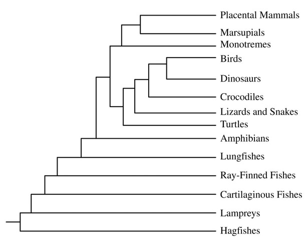

To determine the evolutionary history and relationships among organisms, scientists gather evidence from a
wide variety of sources including paleontology, embryology, morphology, behavior, and molecular biology.
A phylogenetic tree of vertebrates is shown.
Which of the following statements is most consistent with the phylogenetic tree shown?
Birds and turtles share a recent common ancestor,
so it is unlikely they evolved their mechanism of gas exchange independently.
Mammals are most closely related to marsupials.
The common ancestor of reptiles, birds, and mammals share a common ancestor to amphibians, so it is likely the common ancestor produced amniotic eggs.
Crocodiles and ray-finned fishes are rather far from each other on the tree. Living in the same environment is also not proof of relationship.